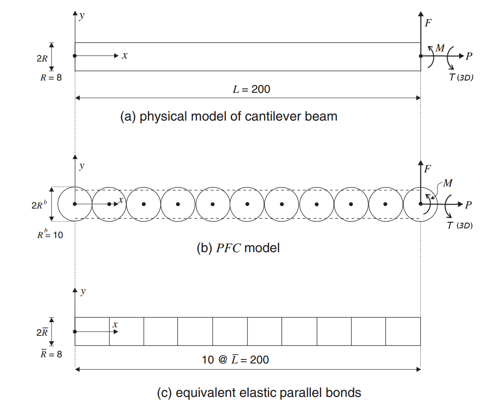

端部受载悬臂梁
注意
本算例的项目文件可在 PFC 中查看或运行。[1]所用的数据文件（data files）列于本算例末尾。
问题描述
采用 PFC2D 和 PFC3D 对端部受载的悬臂梁进行建模。将计算得到的变形以及最大剪应力和正应力与梁理论的解析解进行对比。该问题展示了 PFC 中平行黏结逻辑的能力。
梁的物理模型如下文 图 1（Fig. 1） 的 (a) 部分所示：在三维中，梁长为 200 英寸，圆截面半径 \(R\) 为 8 英寸。在二维中，梁为矩形截面，厚度为单位厚度，高度为 \(2R\)。梁的材料为 2024-T3 铝，杨氏模量 \(E\) 为 1 × 104 ksi，剪切模量 \(G\) 为 3759.4 ksi。荷载包括施加于梁端部的横向荷载 \(F\)、轴向荷载 \(P\)、（面内）弯矩 \(M\) 以及（面外）扭矩 \(T\)（仅三维）。
闭式解
悬臂梁的变形以及最大剪应力和正应力的闭式表达式由简单梁理论给出。该解以下文 图 1（Fig. 1） 所示的笛卡尔坐标系表示。该坐标系的原点位于梁的固定端，\(x\) 轴指向梁端部，并沿中性轴方向。
横向荷载 \(F\) 和弯矩 \(M\) 产生横向挠度 \(Δ_z\) 以及绕 \(y\) 轴的转角 \(θ_y\)。轴向荷载 \(P\) 产生轴向伸长 \(Δ_x\)。扭矩 \(T\) 产生转角 \(θ_y\)（绕 \(x\) 轴）。这些变形由 McGuire 与 Gallagher（1979）（McGuire and Gallagher (1979)） 给出：
其中：
弯曲荷载与施加的扭矩对最大剪应力和正应力的总贡献由下式给出：
承受轴向荷载 \(P\) 的梁的伸长量可利用 \(P/K\) 求得，其中 \(K\) 为单个弹簧的等效刚度。若采用由 \(n\) 个弹簧组成的集合对梁建模，每个弹簧的刚度为 \(k^{(i)}\)，则 \(K\) 可根据这些弹簧是串联还是并联作用来确定，其表达式为：
对于所有弹簧刚度均为 \(k\) 的特殊情况，等效刚度的表达式简化为：
对于采用 \(n\) 个平行黏结和 \(n\) 个接触建模的梁，其解析解可通过如下考虑得到：平行黏结与接触弹簧并联承载，且平行黏结与球颗粒接触的等效刚度由方程 (5) 给出，因此整个梁的等效刚度由下式给出：
其中 \(\bar k_n\) 和 \(k_n\) 分别为每个平行黏结和每个球颗粒的法向刚度。请注意，两个刚度相同的球颗粒之间的接触刚度等于球颗粒刚度的一半。
数值模型
悬臂梁在 PFC 中通过用平行黏结将一排 11 个等半径的球颗粒连接在一起来建模，如下文 图 1（Fig. 1） 的 (b) 部分所示。球颗粒的半径取得比悬臂梁的半径大，以展示每个平行黏结与等效弹性圆柱体之间的关系。每个球颗粒的半径为 10 英寸，但每个平行黏结的半径设为 8 英寸，以与物理梁相匹配。平行黏结的法向刚度和剪切刚度的选取，使得由十个等效弹性圆柱体组成的集合（如下文 图 1（Fig. 1） 的 (c) 部分所示）能够模拟物理梁。因此，所选取的数值为
平行黏结的法向强度和剪切强度均设为一个很大的值 1 × 105 ksi，以使荷载突然施加所产生的惯性效应不会导致平行黏结断裂。每个球颗粒的法向刚度和剪切刚度（2.0106 × 105 kips/inch）通过令方程 (6) 的第二项等于梁的整体刚度 \(AE/L\) 来选取。
位于坐标系原点的球颗粒，其全部六个自由度的速度均固定为零；三个广义力则施加于集合体另一端的球颗粒上。随后对模型进行循环计算，直至达到静态平衡（即所有球颗粒的速度变得可忽略）。由于当轴向荷载施加到已发生挠曲的构型上时问题变为几何非线性，基于简单梁理论的闭式解不再成立，因此轴向荷载作为单独的工况施加。


图 1：悬臂梁与 PFC 模型。（\(M\) 为面内弯矩。\(T\) 为三维模型中的面外扭矩。）
结果与讨论
PFC3D 模型
由施加横向荷载 \(F\)（1.0 kip）、弯矩 \(M\)（100.0 kip × inch）和扭矩 \(T\)（2000.0 kip × inch）引起的梁端变形，与 表 1（Table 1） 中的闭式解进行对比。通过激活方向跟踪（使用 设置方向跟踪（model orientation-tracking） 命令）来监测梁端球颗粒的总转角。FISH 变量 相对 x 位移 11（_xdel11）、相对 y 位移 11（_ydel11） 以及 相对 x 旋转 11（_xrot11）、相对 z 旋转 11（_zrot11） 分别存储梁端的累积位移和转角。平行黏结内最大正应力和最大剪应力的计算值通过 FISH 函数 获取最大平行黏结应力（get_maxpbstr） 求得。最大正应力作用于中心位于 \(x\) = 10 的平行黏结中。其值 7.2117 × 10-1 ksi 与解析解 7.2117 × 10-1 ksi 完全一致（在五位有效数字内），此时 \(x\) = 10。最大剪应力由横向荷载和扭矩产生，并沿梁的全长均匀分布。其值 2.4918 ksi 与解析解完全一致（在五位有效数字内）。打印 最大平行黏结法向应力（_maxpbnstr）、最大平行黏结切向应力（_maxpbsstr）、最大平行黏结 x 向法向应力（_maxpbnx） 和 最大平行黏结 x 向切向应力（_maxpbsx） 即可获得这些结果。
| 数值 | 解析解 | 相对误差 | |
|---|---|---|---|
| \(\Delta_y(L)\) | 1.4512 × 10-1 英寸 | 1.4506 × 10-1 英寸 | < 0.1% |
| \(\theta_z(L)\) | 1.2436 × 10-3 弧度 | 1.4506 × 10-3 弧度 | < 0.1% |
| \(\theta_x(L)\) | 1.6535 × 10-2 弧度 | 1.6537 × 10-2 弧度 | < 0.1% |
此处给出三种独立工况的结果，这些工况中仅将轴向荷载 \(P\) 施加于梁。各工况的区别在于荷载是由平行黏结、接触弹簧还是两者共同承担。
在第一种工况中，\(P\) = +1000 kips，平行黏结保持完好。这使梁处于受拉状态，全部荷载由平行黏结弹簧承担。计算所得的轴向伸长量 9.9472 x 10-2 与解析解完全一致（在五位有效数字内）。
在第二种工况中，\(P\) = -1000 kips，平行黏结被移除。这使梁处于受压状态，荷载由球颗粒之间的接触弹簧承担。计算所得的轴向伸长量 -9.9473 × 10-2 与解析解 -9.9472 × 10-2 之差在 0.1% 以内。
在第三种工况中，\(P\) = -1000 kips，平行黏结保持完好。这使梁处于受压状态，荷载由平行黏结弹簧和球颗粒之间的接触弹簧共同分担。该工况并不对应实际的物理问题，因为平行黏结刚度和接触刚度都是假设两者中仅有一个起作用而选取的。该工况的解析解通过方程 (6) 求得。计算所得的轴向伸长量 -4.9736 × 10-2 与解析解完全一致（在五位有效数字内）。
PFC2D
由施加横向荷载 \(F\)（1.0 kip）与弯矩 \(M\)（100.0 kip × inch）所引起的梁端部变形，与 表 2（Table 2） 中的闭式解进行了比较。通过启用方位跟踪（使用 设置方向跟踪（model orientation-tracking） 命令）来监测梁端部球颗粒的总转角。FISH 变量 相对 x 位移 11（_xdel11）、相对 y 位移 11（_ydel11） 与 旋转 11（_rot11） 分别存储梁端部的累积位移与转角。平行黏结内最大正应力与最大剪应力的计算值通过 FISH 函数 获取最大平行黏结应力（get_maxpbstr） 求得。计算表明，最大正应力位于中心坐标为 \(x\) = 10 的平行黏结中。其值 7.2117 × 10-1 ksi 与 \(x\) = 10 处的解析解 7.2117 × 10-1 ksi 完全一致（在五位有效数字以内）。最大剪应力由横向荷载与扭转力矩产生，且在梁的整个长度上均匀分布。其值 2.4918 ksi 与解析解完全一致（在五位有效数字以内）。打印 最大平行黏结法向应力（_maxpbnstr）、最大平行黏结切向应力（_maxpbsstr）、最大平行黏结 x 向法向应力（_maxpbnx） 与 最大平行黏结 x 向切向应力（_maxpbsx） 即可得到这些结果。
| 数值 | 解析解 | 相对误差 | |
|---|---|---|---|
| \(\Delta_y(L)\) | 1.3685 英寸 | 1.3672 英寸 | < 0.1% |
| \(\theta_z(L)\) | 1.1718 × 10-2 rad. | 1.1719 × 10-2 rad. | < 0.1% |
此处给出三种独立工况的结果，这些工况中仅将轴向荷载 \(P\) 施加于梁。各工况的区别在于荷载是由平行黏结、接触弹簧还是两者共同承担。
在第一种情况下，\(P\) = +1000 kips，平行黏结保持完好。这使梁处于受拉状态，全部荷载由平行黏结弹簧承担。计算得到的轴向伸长量 1.2499 与解析解 1.25 完全一致（在四位有效数字以内）。
在第二种情况下，\(P\) = -1000 kips，平行黏结被移除。这使梁处于受压状态，荷载由球颗粒之间的接触弹簧承担。计算得到的轴向伸长量 -1.2499 与解析解 -1.25 完全一致（在四位有效数字以内）。
在第三种情况下，\(P\) = -1000 kips，平行黏结保持完好。这使梁处于受压状态，荷载由平行黏结弹簧与球颗粒之间的接触弹簧共同分担。此情况并不对应真实的物理问题，因为平行黏结刚度与接触刚度都是在假定两者中仅有一个起作用的条件下选取的。此情况的解析解由方程 (6) 求得。计算得到的轴向伸长量 -6.2497 × 10-1 与解析解 -6.25e-1 完全一致（在四位有效数字以内）。
参考文献
McGuire, W., and R. H. Gallagher. Matrix Structural Analysis, 第 87 页. New York: John Wiley & Sons, 1979.
数据文件
cantilever.dat（三维）
; 文件名：cantilever.dat（3D）
;
; 采用单排球体模拟悬臂梁
; 球体之间由平行黏结连接。
;
;=========================================================================
model new
model large-strain on
model random
model domain ext -50 250 -50 50
contact cmat default model linearpbond
fish define make_cantilever
global _x = 0.0
global _ballcnt = 1
loop _ballcnt (1,11)
command
ball create id [_ballcnt] rad 10 position-x [_x]
end_command
_x = _x + 20.0
end_loop
global bp_11 = ball.find(11)
_xrot11 = 0
_zrot11 = 0
end
; ----- 在端部对 ball.11 施加载荷
fish define apply_loads(_f,_m,_t,_p)
ball.force.app.y(bp_11) = _f
ball.moment.app.z(bp_11) = -1.0*_m
ball.moment.app.x(bp_11) = _t
ball.force.app.x(bp_11) = _p
end
; ----- 求 ball-11 的 x、y 方向总位移。
fish define _xdel11
_xdel11 = ball.pos(bp_11,1) - 200.0
_ydel11 = ball.pos(bp_11,2)
_zdel11 = ball.pos(bp_11,3)
_xrot11 = ball.euler(bp_11,1)*math.degrad
_zrot11 = ball.euler(bp_11,3)*math.degrad
end
; ----- 求模型全部平行黏结中的最大应力及
; 其所在位置
; 输出变量：
; _maxpbnstr：最大法向应力
; _maxpbsstr：最大剪应力
; _maxpbnx：法向应力最大的平行黏结的 x 坐标
; _maxpbsx：剪应力最大的平行黏结的 x 坐标
;
fish define get_maxpbstr
global _maxpbnstr = -1.0
global _maxpbsstr = -1.0
global _maxpbnx = -1.0
global _maxpbsx = -1.0
loop foreach local cp contact.list
if contact.prop(cp,"pb_state") = 3 then
local rad = ...
math.min(ball.radius(contact.end1(cp)), ...
ball.radius(contact.end2(cp)))
local br = contact.prop(cp,"pb_rmul") * rad
local barea = math.pi*br*br ; 按球体处理
local bi = 0.25*barea*br*br ; 按球体处理
local bmfac = contact.prop(cp,"pb_mcf")
local bf = contact.prop(cp,"pb_force")
local bfs = math.sqrt(comp.y(bf)^2+comp.z(bf)^2)
local bfm = contact.prop(cp,"pb_moment")
local tfm = math.abs(comp.x(bfm))
bfm = math.sqrt(comp.y(bfm)^2+comp.z(bfm)^2)
local nsmax = - comp.x(bf) / barea + bmfac * bfm *br/bi
local ssmax = bfs / barea + bmfac * tfm * br/(2.0*bi)
if nsmax > _maxpbnstr then
_maxpbnstr = nsmax
_maxpbnx = contact.pos(cp,1)
end_if
if ssmax > _maxpbsstr then
_maxpbsstr = ssmax
_maxpbsx = contact.pos(cp,1)
end_if
end_if
end_loop
end
; ----- 从此处开始执行
[make_cantilever]
; ----- 设置模型参数
; （注意：pb_n 与 pb_s 取极大的值，使
; 瞬时施加最终荷载所引起的惯性效应
; 不会导致平行黏结
; 发生破坏。）
ball attribute dens=1000 damp 0.7
ball property 'kn'=2.0106e5 'ks'=2.0106e5
model clean
; ----- 添加平行黏结
contact method bond
contact property pb_ten 1e5 pb_coh 1e5 pb_kn 500 pb_ks 188 pb_rmul 0.8
ball fix velocity-x velocity-y velocity-z ...
spin-x spin-y spin-z range id=1
; ----- 历史变量
fish history _xdel11
fish history _ydel11
fish history _zdel11
fish history _xrot11
fish history _zrot11
model orientation-tracking on
model save 'initial'
[apply_loads(1.0,-100.0,2000.0,0.0)]
model solve ratio-maximum 1.0e-4
[get_maxpbstr]
fish list [_xdel11] [_ydel11] [_xrot11] [_zrot11] ...
[_maxpbnstr] [_maxpbsstr] [_maxpbnx] [_maxpbsx]
model save 'final-case1'
model restore 'initial'
[apply_loads(0.0,0.0,0.0,1000.0)]
model solve ratio-maximum 1.0e-4
fish list [_xdel11]
model save 'final-case2'
model restore 'initial'
contact method unbond
[apply_loads(0.0,0.0,0.0,-1000.0)]
fish list [_xdel11]
model solve ratio-maximum 1.0e-4
model save 'final-case3'
model restore 'initial'
[apply_loads(0.0,0.0,0.0,-1000.0)]
fish list [_xdel11]
model solve ratio-maximum 1.0e-4
model save 'final-case4'
;=========================================================================
program return
; 文件结束：cantilever.dat（3D）
cantilever.dat（二维）
; 文件名：cantilever.dat（2D）
;
; 采用单排球体模拟悬臂梁
; 球体之间由平行黏结连接。
;
; =========================================================================
model new
model large-strain on
model random
model domain ext -50 250 -50 50
contact cmat default model LinearPBond
fish define make_cantilever
global _x = 0.0
global _ballcnt = 1
loop _ballcnt (1,11)
command
ball create id [_ballcnt] rad 10 pos([_x],[0])
end_command
_x = _x + 20.0
end_loop
global bp_11 = ball.find(11)
end
; ----- 在端部对球 11 施加载荷
fish define apply_loads(_f,_m,_p)
ball.force.app.y(bp_11) = _f
ball.moment.app(bp_11) = _m
ball.force.app.x(bp_11) = _p
end
; ----- 求球 11 的 x、y 方向总位移。
fish define _xdel11
_xdel11 = ball.pos(bp_11,1) - 200.0
_ydel11 = ball.pos(bp_11,2)
_rot11 = ball.rotation(bp_11)*math.degrad
end
; ----- 求模型全部平行黏结中的最大应力及
; 其所在位置
; 输出变量：
; _maxpbnstr：最大法向应力
; _maxpbsstr：最大剪应力
; _maxpbnx：法向应力最大的平行黏结的 x 坐标
; _maxpbsx：剪应力最大的平行黏结的 x 坐标
;
fish define get_maxpbstr
global _maxpbnstr = -1.0
global _maxpbsstr = -1.0
global _maxpbnx = -1.0
global _maxpbsx = -1.0
loop foreach local cp contact.list
if contact.prop(cp,"pb_state") = 3 then
local rad = math.min(ball.radius(contact.end1(cp)), ...
ball.radius(contact.end2(cp)))
local br = contact.prop(cp,"pb_rmul") * rad
local barea = math.pi*br*br ; 按球体处理
local bi = 0.25*barea*br*br ; 按球体处理
local bmfac = contact.prop(cp,"pb_mcf")
local bf = contact.prop(cp,"pb_force")
local bfm = contact.prop(cp,"pb_moment")
local nsmax = - comp.x(bf) / barea + bmfac * math.abs(bfm) *br/bi
local ssmax = math.abs(comp.y(bf)) / barea
if nsmax > _maxpbnstr then
_maxpbnstr = nsmax
_maxpbnx = contact.pos(cp,1)
end_if
if ssmax > _maxpbsstr then
_maxpbsstr = ssmax
_maxpbsx = contact.pos(cp,1)
end_if
end_if
end_loop
end
; ----- 从此处开始执行
[make_cantilever]
; ----- 设置模型参数
; （注意：pb_n 与 pb_s 取极大的值，使
; 瞬时施加最终荷载所引起的惯性效应
; 不会导致平行黏结
; 发生破坏。）
ball attribute dens=1000 damp 0.7
ball prop 'kn'=16000 'ks'=16000
model clean
; ----- 添加平行黏结
contact method bond
contact property pb_ten 1e5 pb_coh 1e5 pb_kn 500 pb_ks 188 pb_rmul 0.8
ball fix velocity-x velocity-y spin range id=1
; ----- 历史变量
fish history _xdel11
fish history _ydel11
fish history _rot11
model history mechanical age
model orientation-tracking on
model save 'initial'
[apply_loads(1.0,100.0,0.0)]
model solve ratio-max 1e-5
[get_maxpbstr]
fish list [_xdel11] [_ydel11] [_rot11] [_maxpbnstr] ...
[_maxpbsstr] [_maxpbnx] [_maxpbsx]
model save 'final-case1'
model restore 'initial'
[apply_loads(0.0,0.0,1000.0)]
model solve ratio-max 1.0e-5
model save 'final-case2'
model restore 'initial'
contact method unbond
[apply_loads(0.0,0.0,-1000.0)]
model solve ratio-max 1.0e-5
model save 'final-case3'
model restore 'initial'
[apply_loads(0.0,0.0,-1000.0)]
model solve ratio-max 1.0e-5
model save 'final-case4'
; =========================================================================
program return
; 文件结束：cantilever.dat（2D）
尾注
| [1] | 要在 PFC 中查看本项目，请使用程序菜单。
⮡ PFC |
⇐ Strength of a Face-Centered Cubic Array of Spheres | Linear Contact Model: Calibrating the Normal Critical Damping Ratio ⇒
| 这些内容对您有帮助吗？… 版权与免责声明 |
FLAC3D © 2019, Itasca | 原文更新于 2020 年 10 月 8 日 |